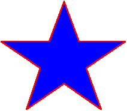

title: Using the Path Element description: Using the Path Element ms.assetid: fd7924e7-f94f-4bc9-aa45-02cf8f9bac9b keywords:
This topic describes VML, a feature that is deprecated as of Windows Internet Explorer 9. Webpages and applications that rely on VML should be migrated to SVG or other widely supported standards.
[!Note]
As of December 2011, this topic has been archived. As a result, it is no longer actively maintained. For more information, see Archived Content. For information, recommendations, and guidance regarding the current version of Windows Internet Explorer, see Internet Explorer Developer Center.
Â
You've learned that you can use the VML predefined shape elements -- such as <oval> , <line>, <polyline>, <curve>, <rect>, <roundrect>, and <arc> -- to draw a shape. In this topic, we will illustrate how to use the <path> sub-element to customize the outline of a shape.
You can place the <path> sub-element inside the <shape> or <shapetype> element. You can then use the property attributes of the <path> sub-element to customize the outline of the shape.
For example, to draw the customized shape illustrated in the following picture, you can use the <path> sub-element to define the outline of the shape, as shown in the following VML representation:

<body>
<v:shape style='width:250;height:250' strokecolor="red" strokeweight="1.5pt"
fillcolor="blue" coordorigin="0 0" coordsize="200 200">
<v:path v="m 8,65 l 72,65, 92,11, 112,65, 174,65, 122,100, 142,155,
92,121, 42,155, 60,100 x e"/>
</v:shape>
</body>
m 8,65 indicate that the drawing starts at the point (8,65).l 72,65, 92,11, 112,65, 174,65, 122,100, 142,155, 92,121, 42,155, 60,100 indicate that a straight line begins at the current point (8, 65) and ends at the given point (72, 65), which becomes the new current point. A new line begins at the current point (72, 65) and ends at the given point, which becomes the new current point, and so on, to the final point (60, 100).x indicates that the path will close by a straight line that starts at the current point (60, 100) and ends at the original point (8, 65).e indicates stop drawing.For more information about this element, see the VML specification .
Â
Â